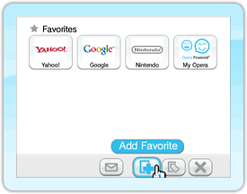
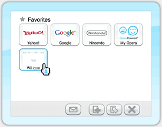
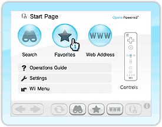
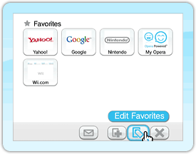
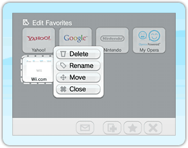
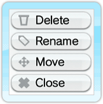
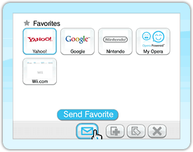
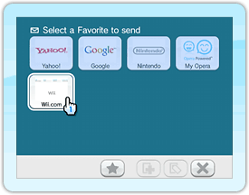
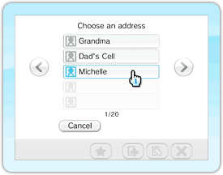

Create, edit, and delete quick links to your favorite pages. You can also send favorites to your Wii Friends.
Adding a Webpage to your list of favorites
You can have up to 56 Webpages listed in your favorites.
Find the Webpage you want by using or .
Once the page opens, put your pointer on and press to view the Favorites screen.

Point to and press . You've just added a new favorite!
Viewing a previously added favorite

When you've added at least one Webpage to your favorites, point to the Favorites icon () and press to view the Favorites screen. Point to the Website you want to view and press . The browser will jump to that site.
Editing previously added favorites

Point to the and press .
The Favorites screen will display.

Point to the and press to edit your favorites.

Point to the Webpage you want to edit and press to edit the details of that Webpage.

Point to the field you wish to edit and press .
Follow the on-screen instructions.
Sending your Favorites to a Wii Friend
Point at and press to display the Favorites screen.

Point at and press . The screen will change colour.

Point at the webpage you want to send to a Wii Friend and press to access the Address Book.
 Point at the Wii Friend you want to send the webpage to and press . The Message Input Screen will be displayed.


 and press
and press  and press
and press  and press
and press